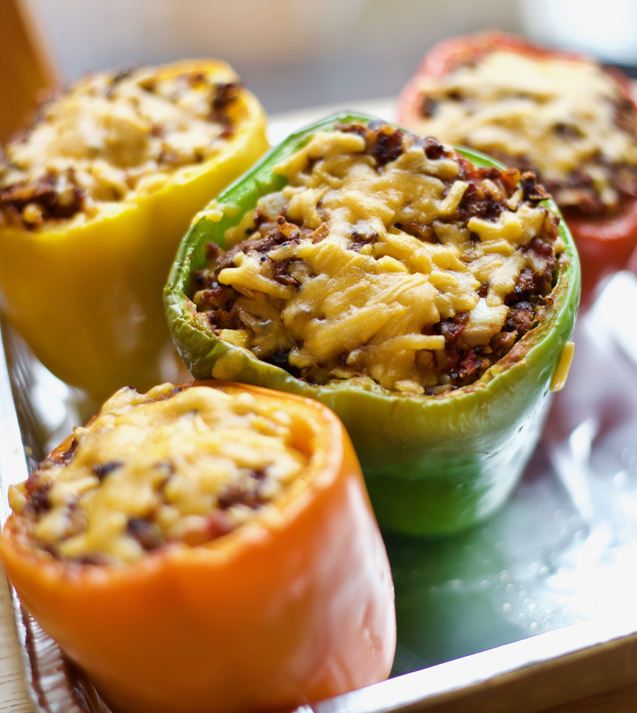

Home
Stuffed Bell Peppers

Description
Stuffed bell peppers are a hearty and flavorful dish made by filling tender bell peppers with a savory mixture of seasoned meat, rice, vegetables, and tomato sauce. The peppers are baked until soft and the filling is hot and perfectly blended, creating a comforting meal that’s both nutritious and satisfying. This classic dish is versatile and can be customized with different meats, grains, cheeses, or spices to suit a variety of tastes.
Ingredients
- 4 large bell peppers
- 1 pound ground beef
- 1 cup cooked white rice
- 1 small onion, diced
- 2 cloves garlic, minced
- 1 cup tomato sauce
- 1 teaspoon salt
- 1/2 teaspoon black pepper
- 1 teaspoon Italian seasoning
- 1/2 cup shredded mozzarella or cheddar cheese
- 1 tablespoon olive oil
Steps
- Preheat the oven to 375°F (190°C) and cut the tops off the bell peppers, removing the seeds and membranes.
- In a pan over medium heat, cook the ground beef, onion, and garlic until the beef is browned. Drain any excess fat.
- Stir in the cooked rice, tomato sauce, salt, pepper, and Italian seasoning and mix well.
- Stuff the mixture into the hollow bell peppers and place them in a baking dish.
- Top with shredded cheese and bake for 25 to 30 minutes, until the peppers are tender and the cheese is melted.